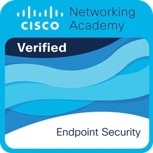

Infrastructure Active Directory
Déploiement d'un contrôleur de domaine, création des OU, utilisateurs et GPO.
Gérer le patrimoineMettre à dispo un service
Voir le détail →
Étudiant en 2e année de BTS SIO, option SISR (Solutions d'Infrastructure, Systèmes et Réseaux). Je me spécialise dans l'administration systèmes, les réseaux et la cybersécurité.
Après un début de parcours en option SLAM, réorientation vers l'option SISR. Lycée La Châtaigneraie, Le Mesnil-Esnard.
Campus La Châtaigneraie, Le Mesnil-Esnard
Lycée Delamare Deboutteville, Forges-les-Eaux
Missions prévues
Service informatique, Gournay-en-Bray. Création d'un annuaire automatisé des employés : traitement des données en Python, interface web de recherche avec QR codes, intégration d'une API SMS, déploiement sur Raspberry Pi.
Service informatique, Gournay-en-Bray. Configuration d'une borne Wi-Fi Cisco en CLI (SSID, WPA2/AES, 5 GHz), installation de systèmes d'exploitation, maintenance matérielle.
Mes projets, classés par domaine, avec les compétences du référentiel E5 qu'ils couvrent.
Déploiement d'un contrôleur de domaine, création des OU, utilisateurs et GPO.
Maquette Packet Tracer : VLAN, routage inter-VLAN et listes de contrôle d'accès.
Ex. : mise en place d'un outil de supervision (GLPI, Zabbix…)
Conception d'une base relationnelle et gestion fine des privilèges utilisateurs.
Ex. : site PHP / MySQL réalisé en cours
Site statique responsive, hébergé sur GitHub Pages et versionné avec Git.
Stage de 1re année : annuaire des employés avec recherche, fiches et QR codes. Python (traitement CSV), Flask / PHP, API SMS, Raspberry Pi sous Linux.
Stage de Bac Pro chez Autoliv : configuration d'un point d'accès Cisco via câble console et PuTTY (SSID, WPA2 / AES, radio 5 GHz).
Thème : la cyberdéfense en entreprise. Attaques, failles exploitées, réglementation (NIS 2) et leçons à en tirer pour protéger un système d'information, suivies mois par mois de juin à novembre 2026.
Les outils que j'utilise pour ma veille technologique et concurrentielle.
Un agrégateur de flux RSS qui permet de suivre des blogs, des sites d'actualités, ou d'autres sources d'information en temps réel. Idéal pour la veille concurrentielle et technologique.
Outil de curation de contenu permettant de créer des pages thématiques et de suivre des informations liées à mes centres d'intérêt.
Outil de surveillance des mentions en ligne. Il suit les mentions d'une marque, d'un produit ou d'un sujet particulier sur des sites web, réseaux sociaux, forums, blogs, etc.
Permet de suivre des mentions sur les réseaux sociaux, mais aussi de réaliser une veille sur des blogs, forums et sites web. Outil puissant pour l'analyse de la réputation en ligne.
Entre le 22 et le 24 mai, les données clients de quatre enseignes d'optique (Optic 2000, Auchan Optique, Atol…) ont été mises en vente sur des forums cybercriminels. Leçon : surveiller les fuites et limiter les données conservées.
La DINUM a annoncé une intrusion sur Tchap, l'outil de messagerie des agents publics, détectée le 7 juin et revendiquée par un attaquant se faisant appeler « misere ».
Sysdig documente la première attaque par rançongiciel menée de bout en bout par un agent IA : exploitation d'une faille Langflow, vol d'identifiants, mouvement latéral puis chiffrement. Le niveau requis pour attaquer baisse.
Enquête Sophos auprès de 129 organisations françaises touchées : les identifiants compromis sont la première cause d'intrusion. D'où l'importance du MFA et de la gestion des comptes.
Bitdefender recense 131 organisations françaises revendiquées par des groupes de ransomware au 1er semestre 2026. Infostealers, PME et chaînes d'approvisionnement sont de plus en plus visés.
Adoptée au Sénat en mars 2026, la loi Résilience qui transpose NIS 2 attend toujours l'Assemblée ; la Commission européenne a saisi la CJUE contre la France en juillet. Environ 15 000 organisations seront concernées.
L'agence européenne analyse 8 257 incidents de 2025 : les dépendances (fournisseurs, cloud) élargissent la surface d'attaque, et ransomware et attaques via les prestataires restent les plus impactants.
Kaspersky décrit une attaque sans chiffrement : entrée par le VPN FortiGate avec un compte valide compromis, puis deux GPO malveillantes déployées dans l'Active Directory. Un cas d'école pour un admin SISR.
Dans la nuit du 11 au 12 octobre, les contrôleurs de froid d'environ 700 magasins ont été compromis via une console de gestion exposée sur Internet. La France a ensuite attribué l'attaque à l'Iran.
Une vulnérabilité des VPN Palo Alto, corrigée en mai, est exploitée depuis juin par Qilin et d'autres groupes. Rappel : patcher vite les équipements exposés et vérifier qu'aucun accès n'a été posé avant.
Les attaquants sont passés par la plateforme d'un prestataire pour utiliser un compte interne de la banque et réaliser des virements frauduleux. Le préjudice dépasserait 100 M€ selon la presse.
Via son prestataire Coolworld, des chambres froides de l'Établissement français du sang ont été reprogrammées de -30 °C à 110 °C. L'alerte est venue de la supervision de l'EFS, pas du prestataire.
Le 9 novembre, la France impute officiellement l'attaque des supermarchés à une unité cyber liée aux Gardiens de la Révolution iraniens.
Parcours de certifications complémentaires (PCC).

Protection des postes, gestion des incidents · 27 h
En coursÉpreuve E5 « Support et mise à disposition de services informatiques ». Chaque réalisation est rattachée aux compétences du bloc 1 qu'elle mobilise. Les totaux se calculent automatiquement.
| Réalisation | B1.1Gérer le patrimoine informatique | B1.2Répondre aux incidents et demandes | B1.3Développer la présence en ligne | B1.4Travailler en mode projet | B1.5Mettre à disposition un service | B1.6Organiser son développement pro |
|---|---|---|---|---|---|---|
| Milieu professionnel | ||||||
| Annuaire automatisé des employés — stage Autoliv (2025) | ||||||
| Borne Wi-Fi Cisco en CLI — stage Autoliv (2023) | ||||||
| Réseaux & systèmes | ||||||
| Tes réalisations SISR en cours (AD, VLAN…) | ||||||
| Développement professionnel | ||||||
| Portfolio en ligne (GitHub Pages) | ||||||
| Veille technologique — la cyberdéfense en entreprise | ||||||
| Certifications PCC — Pix, ANSSI, RGPD, Cisco | ||||||
| Nombre de réalisations | ||||||
Stage de 1re année BTS SIO, service informatique (5 semaines).
Stage de 2e année BTS SIO à compléter
Attestations disponibles sur demande.